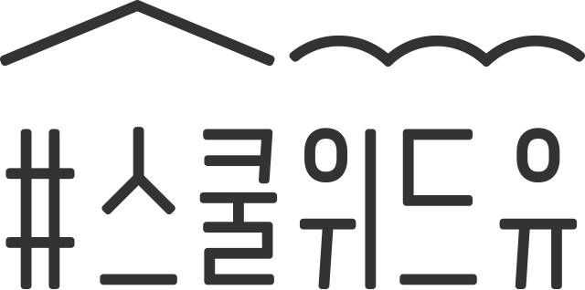
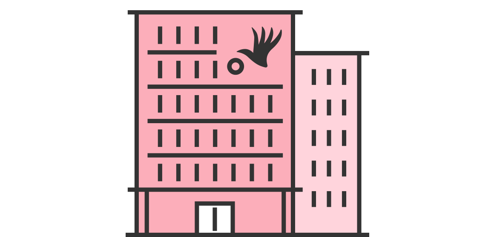

서울특별시교육청 학교 성폭력 온라인 신고센터
신고하기
가상신고
대응가이드
1 상황 인식하기
2 도움받을 곳 찾기
3 해결 방법 선택하기
4 신고하고 처리하기
5 다시 일상으로
3 해결 방법 선택하기
해결 방법 생각하기
신고기관 찾기
국가인권위원회에 신고하면?

국가인권위원회란
입법, 사법, 행정부 어디에도 소속되지 않은 독립 국가기관입니다.
인권침해와 차별행위에 대해 조사하고 구제 조치를 결정합니다.
신고 방법
전화
국번없이 1331
홈페이지
국가인권위원회 홈페이지
www.humanrights.go.kr
우편·방문
직접 방문하셔서 진정서를 접수하시거나 진정서를 작성하여 우편으로 접수할 수 있습니다.
(04551) 서울특별시 중구 삼일대로 340 (저동 1가) 나라키움 저동빌딩 10층 인권상담조정센터
팩스
진정서를 작성하신 후 팩스로 전송합니다. (02-2125-9811~2)
이메일
진정서를 작성하신 후 이메일로 보냅니다. (hoso@humanrights.go.kr)
신고할 수 있는
성폭력 유형
교직원의 교직원·학생에 대한 성희롱
*
*성희롱: 성적인 말이나 행동으로 성적 굴욕감 또는 혐오감을 느끼게 하는 행위(언어적·신체적·시각적 성희롱과 디지털 성범죄 모두 포함)
조치 사항
1
가해자에게 특별인권교육 등의 시정사항을 권합니다.
2
학교장에게 재발방지를 위한 교육 및 대책, 가해자에 대한 징계, 손해배상 등을 합니다.
3
당사자에게 합의를 권하거나 조정을 통해서도 문제를 해결합니다.
4
국가인권위원회의 결정 내용은 법적 구속력은 없으나, 결정 내용대로 실천하지 않는 경우 위원회는 그 사실을 공표할 수 있습니다.
다음
처음으로